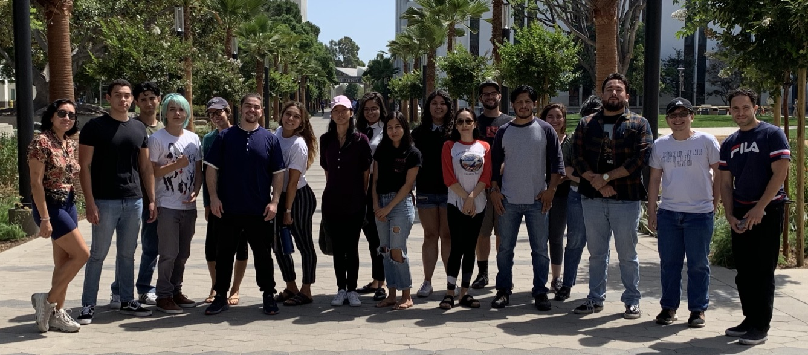

These are materials from the 2019 Cal State Fullerton Workshop on High-Performance Computing and Gravitational Waves. The workshop is scheduled to be held at Cal State Fullerton’s Gravitational-Wave Physics and Astronomy Center, on August 19, 2019 – August 23, 2019.
Notebook to explore data from SXS Catalog of simulations of merging black holes - This notebook will let you interact with data from different simulations in the SXS Catalog. It will show you how to make plots of the black-hole masses, and it will show you how to plot and turn into a sound the emitted gravitational waves.
The following students from Citrus College are participating in the workshop: